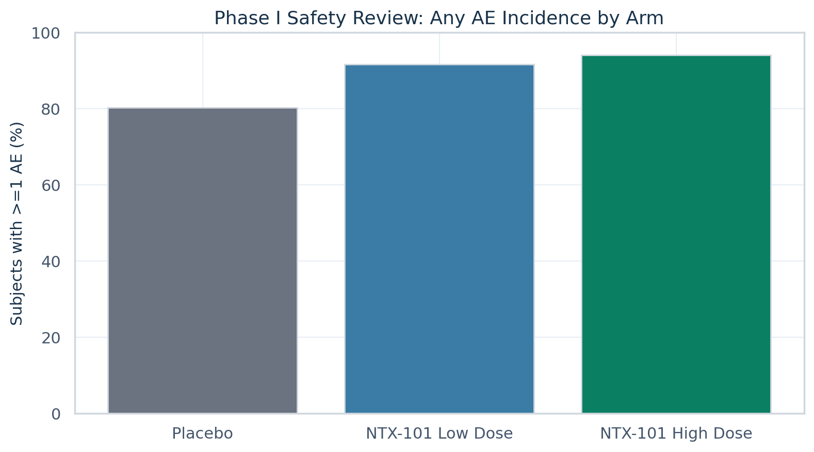
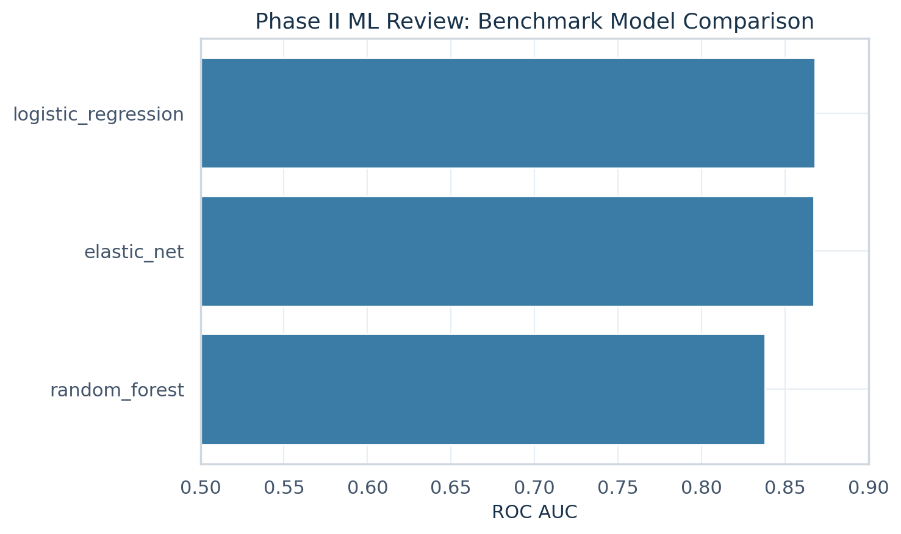
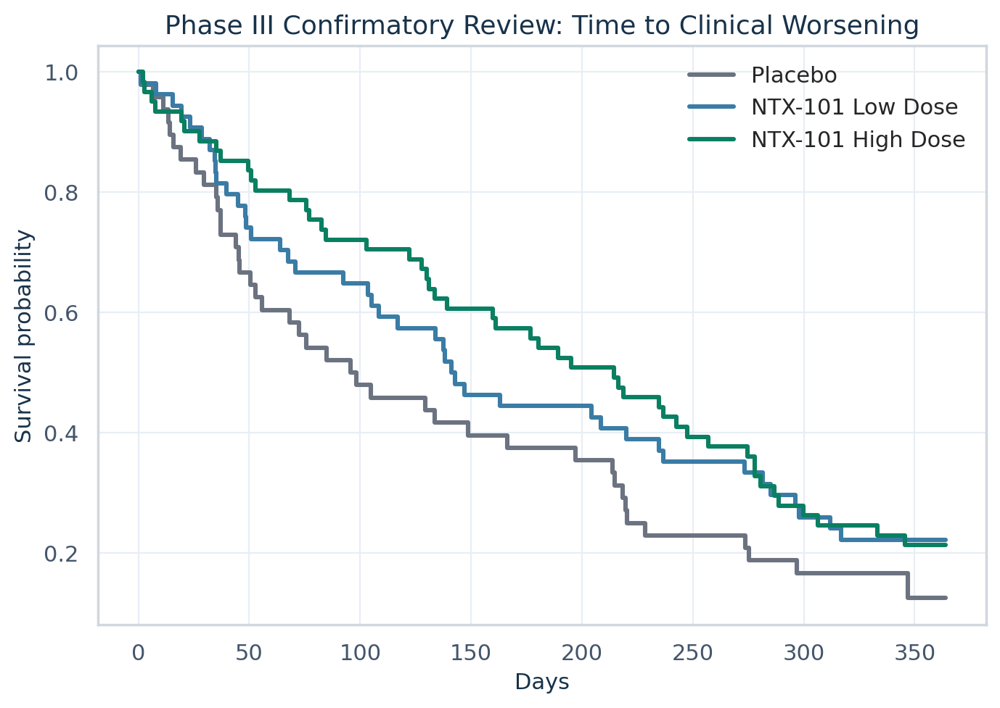

Integrated Clinical Development Review — NTX-101
Integrated cross-phase evidence package for NTX-101 in mild-to-moderate Alzheimer's dementia.
Executive conclusion
The integrated review presents a coherent development path: Phase I GO based on manageable safety findings, Phase II GO supported by directional efficacy with formal treatment-vs-placebo testing, and Phase III GO based on superiority-style time-to-event evidence with dose-consistent treatment effect.
Importantly, the asset under study is NTX-101, a fictional investigational therapy inspired by public source structure.
Biopharma operating model reflected in the repo
XPT / RDA
interim parquet
SDTM-like
synthetic, documented
ADaM-like
decision-facing outputs
Source strategy and standards posture
| Source | Role | Coverage | Industry relevance |
|---|---|---|---|
| CDISC Pilot XPT | Core public structural backbone | DM, AE, LB, VS, EX, DS plus ADaM-like examples | Sponsor-style submission structure and standards vocabulary |
| SafetyData RDA | Supplemental safety and standards reference | 32 exported parquet datasets | Additional clinical programming realism and R interoperability |
| Synthetic continuity bridge | Phase continuity and endpoint completion | Subject master, phase assignments, efficacy longitudinal, event outcomes | Provides a continuous clinical program narrative where public source coverage is incomplete |
| Thin R reference layer | Standards-facing cross-check | Reference ADSL/ADAE derivations and row-count comparisons | Provides an independent cross-check of selected derivations against an alternate standards-facing workflow |
Key metrics and formal evidence snapshot
| Metric | Value |
|---|---|
| Phase I gate | GO |
| Phase II gate | GO |
| Phase II primary model | logistic_regression |
| Phase II ROC AUC | 0.868 |
| Phase II responder uplift | 19.07 pp |
| Phase II primary endpoint p-value | 0.0019 |
| Phase III median delay to worsening | 83.58 days |
| Phase III log-rank p-value | 0.0421 |
The inferential layer includes treatment comparisons, p-values, confidence interval summaries, benchmark model comparison, and a documented primary model choice to support cross-functional development review.
The predictive modeling package remains interpretable, clinically contextualized, and anchored to a prespecified threshold rationale.
Methodology
| Stage(s) | Focus | Conclusion |
|---|---|---|
| 1 | Operating model, source inventory, ingestion | Program contract frozen; 12 XPT domains and 32 SafetyData exports normalized to parquet. |
| 2 | Contracts, harmonization, continuity bridge | Schema validation added; harmonization preserved row counts across 6 core domains; synthetic bridge created 306 subject-level records and 163 Phase III event records. |
| 3 | ADaM-like layer and R reference | ADSL/ADAE/ADLB/ADVS/ADEFF/ADTTE produced; R reference comparisons showed row deltas of 0 for ADSL and 0 for ADAE. |
| 4 | Phase I early development review | Gate = GO. Phase I now supports progression with manageable on-treatment safety burden, no treatment-related death imbalance, and explicit statistical comparison versus placebo retained in the report. |
| 5 | Phase II endpoint and interpretable ML | Gate = GO. Week 24 responder separation was kept in a more plausible advancement range (difference = 19.07 pp) while the primary logistic model was tuned to a clinically justified threshold and good discrimination. |
| 6 | Phase III confirmatory review | Formal Kaplan-Meier, log-rank, and Cox-model analyses support superiority-style interpretation with hazard ratio control below 1.0 and dose-consistent treatment effect. |
| 7 | Report and final QC | Static review package, lineage manifest, final validation report, and completed stage tracker delivered; 13 tracked stages marked complete. |
Harmonization and QC snapshot
| Domain | Input rows | Output rows | Delta |
|---|---|---|---|
| dm | 306 | 306 | 0 |
| ae | 1191 | 1191 | 0 |
| lb | 59580 | 59580 | 0 |
| vs | 29643 | 29643 | 0 |
| ex | 591 | 591 | 0 |
| ds | 596 | 596 | 0 |
Visual snapshots
Phase I safety review

Reframed as a sponsor-style safety graphic with ordered arms and restrained executive palette.
Phase II efficacy and ML

Benchmarking supports conservative model selection while keeping logistic regression primary for interpretability.
Phase III confirmatory view

Left-to-right time-to-event display with arm-specific curves and executive-style visual treatment.
Open the main artifacts
Safety thresholds, AE rate comparison, and early development gate.
Hypothesis testing, responder logic, benchmarks, calibration, and model card.
KM view, time-to-worsening test, safety integration, and final recommendation.
Raw -> interim -> harmonized -> synthetic -> derived traceability.
Inputs, exclusions, leakage controls, metrics, and limitations.